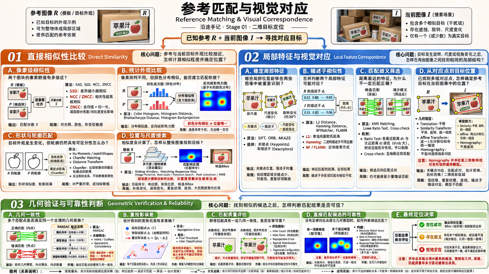

KNOWN REFERENCE · 参考匹配与对应
参考匹配与视觉对应
Reference Matching · 用已知信息寻找指定目标
前面已经研究过颜色、轮廓和局部特征怎样从图像中提取出来。但有时候，我们还掌握着一张目标照片，或者一份已有的目标描述。
既然知道它大概长什么样，能不能拿着参考，在当前图像中找到对应的位置？
这一页先不展开算法，只把需要研究的不同问题区分清楚。

00DEFINE THE PROBLEM
先把问题边界说清楚
参考匹配不是重新学习一种全新的视觉特征，而是利用事先已知的信息，在当前图像中寻找对应。
二维参考定位：给定当前图像与目标的已有参考信息，寻找目标在图像中的位置；如果证据不足，也允许返回“无法确定”。
已知什么目标照片、局部外观、轮廓或提前提取的特征。
希望得到对应区域、匹配点、目标四角或其他二维定位结果。
不重复什么颜色、边缘、关键点等基础特征怎样提取——这些在上一条路线中已经研究过。
研究范围：围绕已知目标的二维参考匹配，不讨论连续跟踪、三维位姿和学习式识别。与已知背景相比寻找“变化区域”，是另一类场景变化检测问题，不等同于指定目标匹配。
01THREE QUESTIONS
接下来，需要区分哪三件事？
关键不是给算法重新分类，而是看已有参考与当前画面之间，还缺哪一步。前两条是不同的匹配入口，第三条负责判断匹配结果是否可信。
01
02
03
Direct Similarity · 从整体外观找位置
直接相似性比较
参考图与当前画面比较接近，怎样找出最相似的位置？
直接比较图块、颜色分布或形状等信息，关注相似性怎样计算、在哪里搜索，以及尺度和光照变化会带来什么影响。
下层笔记 · 研究相似度与位置搜索
Feature Correspondence · 从局部细节建立关系
局部特征与视觉对应
拍摄角度、尺度变了，整块外观难以直接比较怎么办？
利用两张图像中可重复识别的局部特征，建立点与点之间的对应，再尝试确定参考目标在当前画面中的位置。
下层笔记 · 研究描述子对应与位置映射
Verification · 两种匹配入口的共同问题
几何验证与可靠性判断
找到了相似候选，怎样知道它真的就是那个目标？
检查匹配是否足够明确、对应关系是否符合几何约束，并决定接受某个定位结果，还是承认当前无法确定。
下层笔记 · 研究错配排除与结果可信度
为什么只分这三部分？ 前面已经学习过特征本身，这里只新增“怎么比较、怎么对应、怎么确认”。同一项算法的底层原理不需要在两处重复解释。
↳LOOKING BACK
这三部分分别负责什么？
| 研究问题 | 核心关注 | 得到什么 |
|---|---|---|
| 直接比较 | 哪里最像参考？ | 候选位置与相似性得分 |
| 局部对应 | 哪些局部是同一个位置？ | 匹配点及二维变换关系 |
| 可靠性判断 | 这些结果能相信吗？ | 接受、筛除或拒绝定位 |
这不是必须依次执行的三步流水线。直接比较与局部对应可以分别使用；可靠性判断则是两者都需要考虑的共同问题。